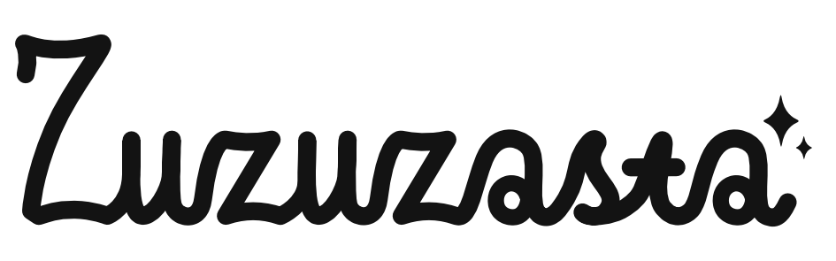

engineering - photography - design
About me:
Hi, my name is Zuzanna but you can call me Zuza (or Suzanne).
Engineer:
I’m a materials engineer with over 3 years of experience as materials researcher and a
Master’s degree in Materials and Manufacturing Engineering from DTU. I am driven by the belief that
a sustainable society requires sustainable solutions — from minimizing waste and extending component
lifetimes, to optimizing every step of the manufacturing process. Throughout my professional journey
I have worked extensively with surface engineering – from two large PVD projects during my studies
to surface hardening through thermochemical conversion at Expanite. Even though the surface has
become my area of expertise and I proudly call myself a metallurgist, I have shown similar level of
passion for other areas of the materials domain, with ceramic materials holding a special place in
my heart. Materials investigation is my forte, I thrive on a cross section of laboratory investigation
and technical writing, having experience with SEM/EDS, XRD, GD-OES, LOM, metallography and mechanical
testing, and being responsible for investigation, analysis and communication of results for multiple
internal and external projects during my time at Expanite.
As a transgender woman I value sensitivity, inclusivity and equality and I bring those values to every
collaborative environment I partake in. I excel in science communication, whether to external stakeholders
or within the organization. As my job requires communicating complex ideas to customers and suppliers as
well as conducting employee trainings, I often tailor the level of complexity to my audience. Having
analytical approach to problem-solving and being detail-oriented are a must in this line of work. I
am always tweaking and improving my work organization processes, which allows me to deliver results
that are comprehensive and trustworthy.
Artist:
I am also an "amateur" photographer. Although perhaps it would be better to use a word
"self-taught". I started my journey with photography in late 2022 as a way to help reduce anxiety
related to my gender identity. Through frequent photography walks I was able to process my emotions
while simulatneously hidden behind camera lens. In 2025 I have joined Dark Gallery in Copenhagen as
a rookie partner. Working together with the team there, I have decided to shift my artistic focus into
more Queer-aligned photography, which lets me create a dialog with the viewer about gender and queerness.
My work spans artistic imagery, street photography, landscape, architectural detail and portrait.
Since high school times I have also called myself a graphic designer. I have been using vector based programs
(Adobe Illustrator, Inkscape, Affinity) to design logotypes, posters, leaflets and other marketing materials
for various events and businesses. My strong side is creating visual identification for companies.